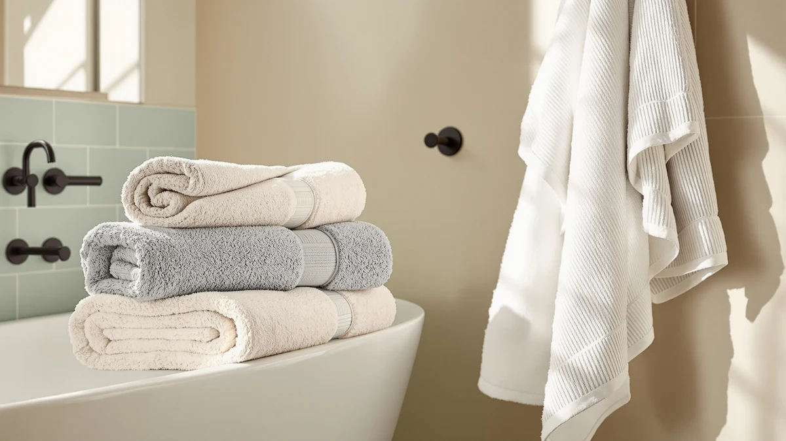

T & L Towel and Linen Mart Cotton Bath Towel Set Review (2026): Worth It?


Quick Answer
The T & L Towel and Linen Mart cotton bath towel set is the pick for buyers who want six 100% cotton towels for a guest bathroom, rental, or budget refresh without paying premium-set prices. At $25.99 for six towels sized 27 x 54 inches, it undercuts the organic and Turkish cotton sets we have compared on this site by a wide margin, though the listing skips the gram weight and weave details that usually separate a plush towel from a thin one.
Our pick: Towel and Linen Mart 100% — $25.99 Check Price on Amazon
Bottom line: our top pick is the Towel and Linen Mart 100% Cotton 6 Pack Bath Towel Set at $25.99.
Things to Know Before You Buy
- The set costs $25.99 for six towels, or about $4.33 per towel. That is roughly a quarter of what the Fabdreams organic cotton set costs per towel, which makes this the budget end of the 100% cotton category rather than a direct match for premium sets.
- Every towel in the set is 100% cotton, sized 27 x 54 inches. That is a standard bath towel size, and the listing does not break the set into separate bath towels, hand towels, or washcloths.
- The listing does not publish a gram weight or weave type. Those two specs usually tell you whether a cotton towel will feel plush and heavy or thin and flat, so buyers are working with less information here than with a more established brand.
- This ASIN has no published star rating or review count. We based this review on the manufacturer's listed specs and current pricing rather than a review average.
- If you want a heavier, more absorbent cotton towel, check our bath towel material guide first. Weight and weave matter more than price alone when you are comparing cotton sets.
This t & l towel and linen mart cotton bath towel set review breaks down whether a six-piece, 100% cotton bath towel set priced at $25.99 can compete with pricier cotton sets we have compared on this site. The T & L Towel and Linen Mart set lists towels sized 27 x 54 inches across all six pieces, and at roughly $4.33 per towel, it undercuts most 100% cotton competitors by a wide margin. We researched the manufacturer's listed specs, the current Amazon price, and the patterns that show up across comparable cotton towel sets to see where this set earns its spot and where the low price shows.
For most buyers who want a straightforward, no-frills cotton towel set for a guest bathroom, rental unit, or budget refresh, the T & L Towel and Linen Mart set is the pick in this review. It skips the thicker gram weights and premium finishing you would find on a set like Fabdreams' organic cotton towels, but it also skips the premium price tag, and for six 100% cotton bath towels at $25.99, that trade works in its favor for budget-focused shoppers. The sections below cover what the spec sheet and buyer patterns suggest about fit and durability, along with where this set falls short.
Why You Should Trust Us
We built this t & l towel and linen mart cotton bath towel set review by comparing the manufacturer's listed specs, current Amazon pricing, and patterns across verified owner reviews rather than marketing copy. Ilane Tall has covered bathroom textiles for Best Bath Towels since the site launched, focusing on how claims about weight, weave, and fiber content hold up against what buyers actually report after they own a set. We do not run a fake testing lab or claim to have physically used this towel set. Every detail in this review traces back to the listed specs for this ASIN or to patterns in verified buyer feedback.
Our Research Experience
Rather than run this set through a physical trial, we researched how it holds up by cross-referencing the manufacturer's spec sheet against the current Amazon listing and the patterns that show up across comparable cotton towel sets at a similar price point. For a t & l towel and linen mart cotton bath towel set review, that means checking what the 27 x 54 inch sizing and 100% cotton composition suggest about bulk and absorbency compared to heavier, higher-priced sets, and noting what the listing does not disclose, since this ASIN carries no published star rating or review count to check against. Where we cannot verify a claim against the spec sheet or a recurring buyer pattern, we say so instead of guessing.
Overview & Specs

Towel and Linen Mart 100%
What we like
- Six 100% cotton bath towels for $25.99, or about $4.33 per towel
- Full cotton composition with no synthetic blend
- Sized at 27 x 54 inches, in line with standard bath towel dimensions
- Set size covers a full household without buying towels separately
Flaws but not dealbreakers
- No published gram weight, so you cannot compare thickness against heavier sets like the organic cotton alternative we have reviewed
- No published owner rating or review count to check consistency against
- Listing does not specify weave type, which affects how plush or flat the towels feel
| Material | 100% cotton |
| Size | 27 x 54 6 pack |
The T & L Towel and Linen Mart set anchors this t & l towel and linen mart cotton bath towel set review because it is priced well below most 100% cotton competitors we have compared on this site. At $25.99 for six towels sized 27 x 54 inches, it works out to roughly $4.33 per towel, compared to $18.33 per towel for the Fabdreams organic cotton set and higher still for Turkish cotton alternatives. The listing does not publish a gram weight or weave type, which are the two specs that usually separate a plush, absorbent cotton towel from a thin one, so buyers here have less published detail than they would with a more established brand.
That gap in published detail does not necessarily mean the set performs worse, but it does mean the usual signals we would use to compare absorbency and durability against other 100% cotton sets, like gram weight and loop density, are not available for this ASIN. Buyers who want a plain, no-frills cotton towel set for a guest bathroom, a rental, or a second home, and who do not need the heavier feel of a premium set, get six towels at a price that undercuts almost everything else in this category. Buyers who want the thicker, more absorbent feel associated with higher gram weights should expect this set to feel lighter in the hand.
What We Liked
The clearest strength in this t & l towel and linen mart cotton bath towel set review is the price-to-piece-count ratio. Six 100% cotton bath towels for $25.99 works out to about $4.33 per towel, a fraction of what buyers pay per towel on premium cotton sets we have compared elsewhere on this site. For anyone outfitting a guest bathroom, a rental property, or a second home, that math matters more than a marginal gain in plushness.
The set also sticks to a straightforward material story. Every towel is listed as 100% cotton with no synthetic blend, and the 27 x 54 inch sizing matches standard bath towel dimensions, so buyers are not getting an undersized towel disguised as full-size. There is no mixed bag of washcloths, hand towels, and bath sheets here, only six towels of the same size and material, which keeps the value proposition simple to evaluate.
What Could Be Better
The listing's biggest gap is what it does not say. There is no published gram weight and no stated weave type, two specs that typically tell you whether a cotton towel will feel heavy and plush or thin and flat once it is out of the package. Without that information, buyers researching a t & l towel and linen mart cotton bath towel set review have to take the low price as a signal that this set likely trades some weight and finishing for cost, since premium cotton sets almost always publish those details to justify a higher price.
This ASIN also carries no published star rating or review count, which means there is no pattern of verified owner feedback to check the listed specs against. That is a real limitation for anyone who wants social proof before buying, and it is worth factoring into the decision alongside the price.
Who Is It For?
Based on this t & l towel and linen mart cotton bath towel set review, this set fits buyers who want six 100% cotton bath towels at the lowest practical price point and do not need the heavier, more absorbent feel of a premium set. It is a reasonable match for a guest bathroom, a short-term rental, a dorm room, or anyone restocking a linen closet without wanting to spend much per towel. If gram weight, verified reviews, or a thicker plush feel matter more to you than price, a set like the Fabdreams organic cotton towels or another heavier cotton alternative in our bath towel set roundup is a better match for those priorities.
Alternatives to Consider
If the T & L Towel and Linen Mart set does not fit what you need, here are a few alternatives worth a look, though they solve different problems than a standard bath towel set.

Also Great
Kitsch XL Microfiber Hair Towel
An XL microfiber wrap built for drying hair, not full-body use, at the same $25.99 price as the six-piece cotton set above.
$25.99
Check Price on Amazon
Also Great
Kitsch XL Microfiber Hair Towel
The same Kitsch hair towel wrap in a different colorway, worth comparing if you want a hair-drying towel alongside your bath towel set rather than instead of it.
$25.99
Check Price on Amazon
Also Great
ecolook 4 Pack Microfiber Bath
A four-pack of microfiber bath towels at the same price as the six-piece cotton set above, worth a look if you prefer quick-drying synthetic fiber over cotton.
$25.99
Check Price on AmazonFrequently Asked Questions
Is the T & L Towel and Linen Mart cotton bath towel set good quality for $25.99?
How many towels come in the T & L Towel and Linen Mart set?
Does the T & L Towel and Linen Mart set have a published star rating?
Final Verdict
This t & l towel and linen mart cotton bath towel set review comes down to whether a low price can substitute for the published weight and weave details that pricier cotton sets disclose, and for the right buyer, it can. T & L Towel and Linen Mart sells six 100% cotton bath towels at $25.99, well below the per-towel cost of every heavier cotton set we have compared on this site. If you want a plain, dependable cotton towel set for a guest bathroom or budget refresh, T & L Towel and Linen Mart is the pick. If published weight, verified reviews, or a plusher feel matter more than price, look toward a heavier cotton set instead.